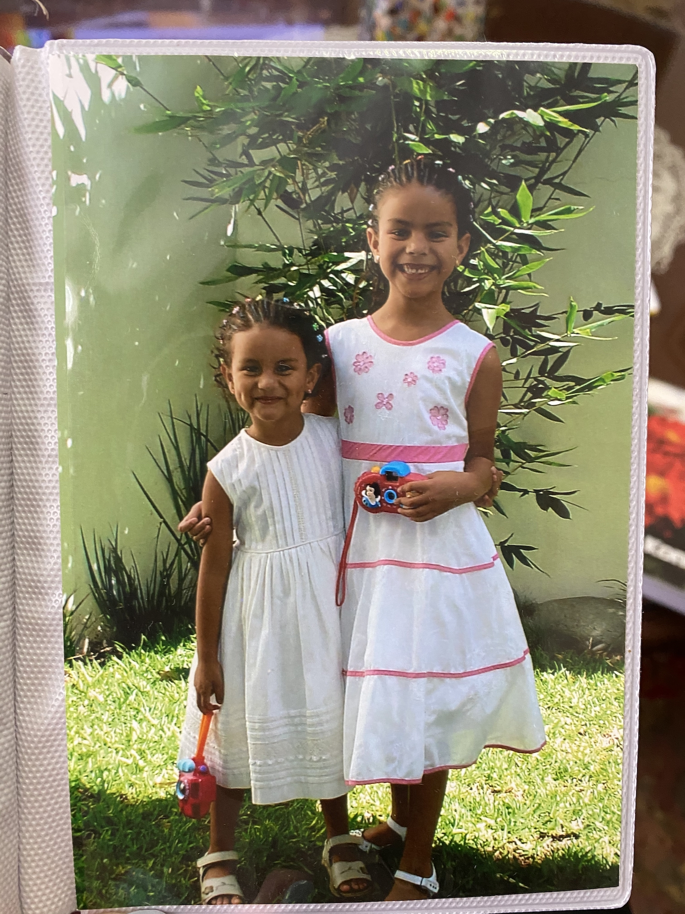

Who am I? A multitasking lover, passionate for empowering women, and a fashionista. A baker, cook, and avid reader who enjoys nature walks and loves ice cream!
I was born in Mexico and moved to the United States for Middle and High School. I'm currently a student at Texas Christian University, studying Computer Science with a Mathematics Minor. I'm currently also debating wether I should switch my major to Data Science...
A new multicultural chapter at TCU; looking to promote Unity, Honesty, Integrity, and Leadership and serve our communities.
The Harrison Building front desk assistant, University Host, and dedicated student tour guide volunteer.
Returning Frog Camp facilitator, 2023 cohort member of the Chancellor's Leadership Program , TCU organization founding president.
Quite honestly, some of the most intelligent, driven, and straightforward people I have ever met!
Highly competitive scholarship program for high-achieving students looking to enter STEM careers.
Completed Lower Division Honors, and serving as 2021-2022 TA for Professor Williams. Through her class, my essay The Hypocrisy Behind Oscar Wilde's Conviction: A Tale of British Victorian Secrecy was published in the 2020 edition of The Boller Review. I have enjoyed taking courses such as College Life and Identity with Dr. Boyd, and The GENIUS of Hip-Hop with Dr. Gooding, as well.
I will be a peer guide for the Fall 2021 semester for our Intro to University Life course for incoming freshmen. I am so excited to meet the new class of students, and be there to support them through this program!